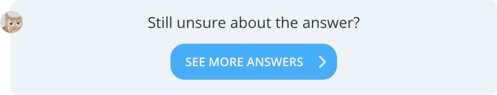 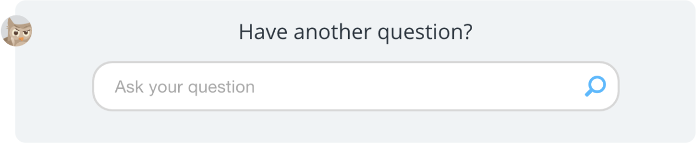 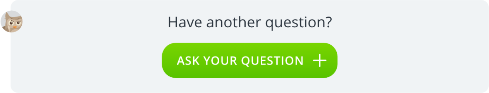
Hello!
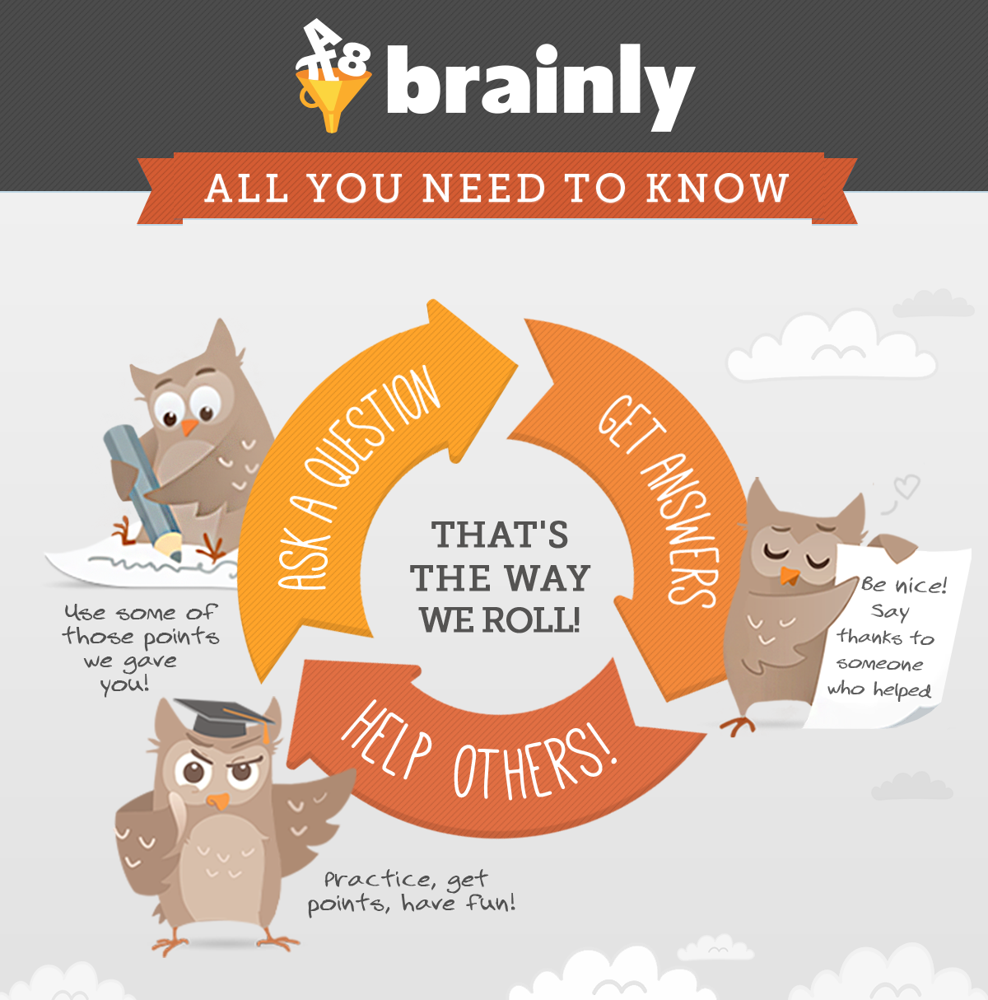
testing and optimizing
Improvements
adding new features
removing features
modifying layout
experimenting with different colors and pictures
changing headlines, descriptions, calls to action
etc.
How to generate ideas for improvements?
brainstorming
looking at competitors
analyzing analytics data
running surveys and pools
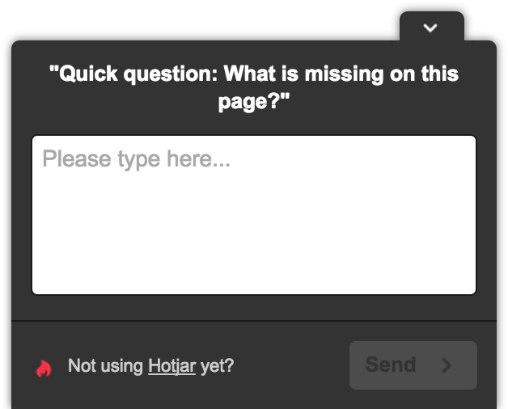
meeting your target group
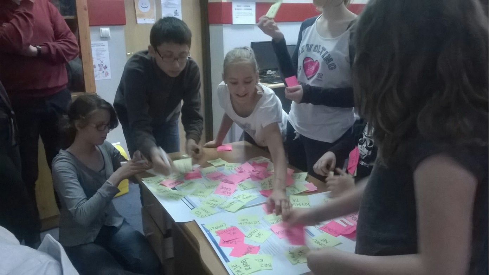
usability testing
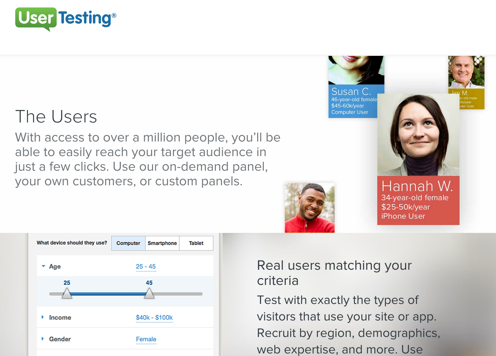
recording live users
getting from
“we think” to “we know”
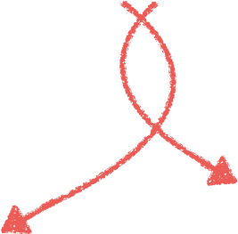 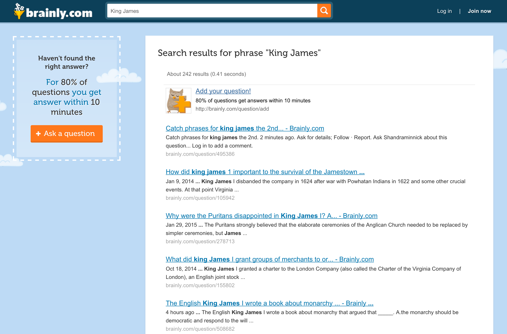 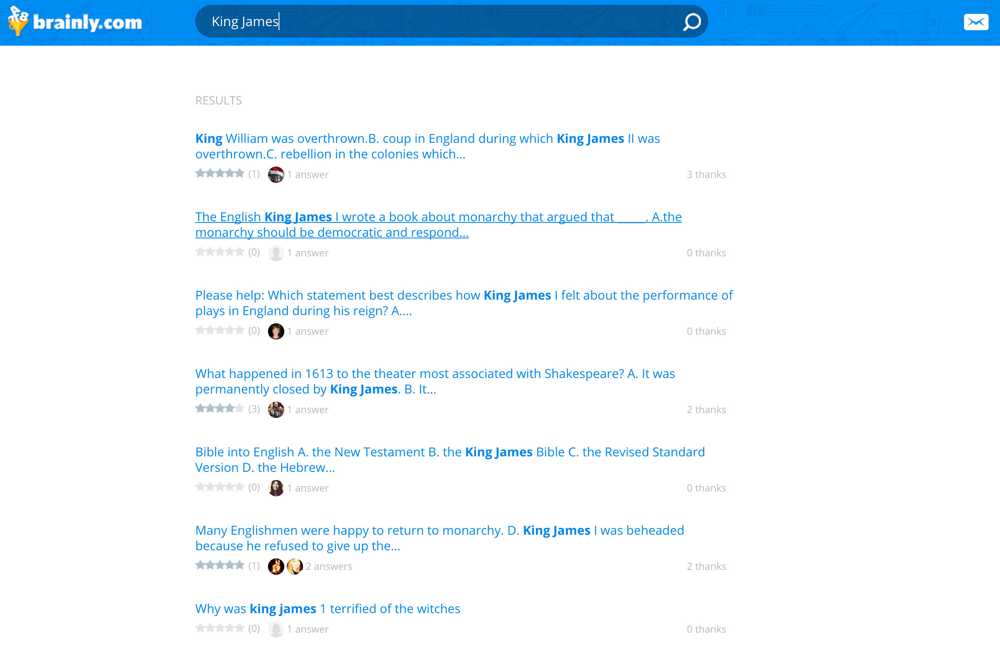
Getting reliable results
randomized
consistent
one test at the time
2 weeks - two full cycles
statistically significant
Baseline Conversion Rate
%
Minimum Detectable Effect
%
Minimum sample size for each variant:
?
A/B testing tools
Google Content Experiments
Optimizely
Kissmetrics
Amazon A/B Testing
Case studies
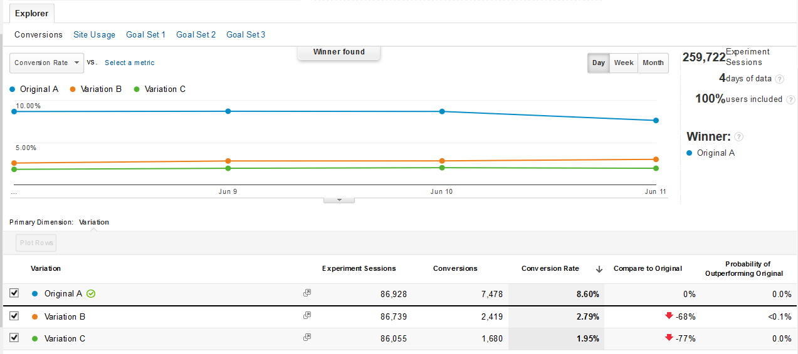
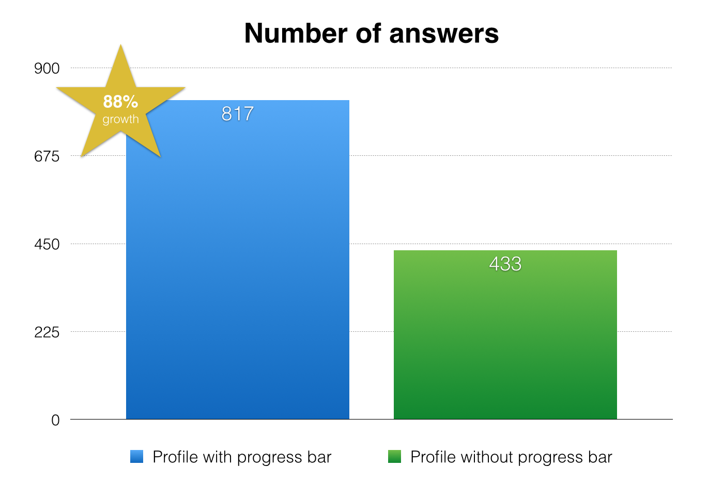
Thanks!